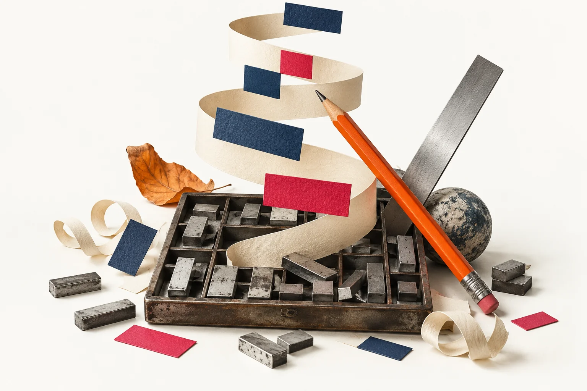
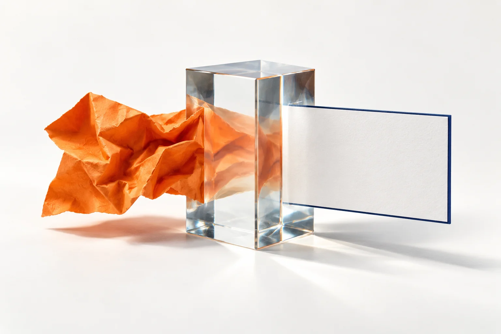

Меньше чистого листа.
Больше времени на детей.
ИИ помогает подготовить материал. Педагог решает, подходит ли он конкретной группе.
Три результата: история, игра и рабочий текст. Каждый проходит вашу проверку.
ИИ — широкое понятие.
LLM работает с языком.
Модель и приложение — разные вещи. Сервис даёт удобный доступ к модели и дополнительным инструментам.
Модель — вычислительный инструмент; чат — приложение для работы с ней.
Сначала модель обучают.
Потом вы задаёте вопрос.
Обучение на данных настраивает параметры. В чате модель использует уже обученные закономерности и доступный контекст.
Уточнение меняет контекст беседы. Это не мгновенное переобучение модели.
Ответ — по частям.
Смысл проверяете вы.
Модель продолжает текст с учётом запроса. Связный ответ не означает, что факты проверены.

Поиск в интернете — отдельный инструмент. Он не включён автоматически.
Хорошо пишет.
Но может уверенно ошибаться.
«Галлюцинация» — выдуманные или искажённые сведения, которые модель подаёт как достоверные: факт, ссылка, цитата или правило.
Уверенный тон ≠ доказательство. Факт, ссылку, цитату и правило проверяем.
У разных сервисов —
похожая логика общения.
Это учебная схема, не скриншот конкретного сервиса. Расположение, названия кнопок и доступные функции различаются.
Учебная схема: названия, расположение и функции зависят от сервиса и тарифа.
Управляйте беседой.
Уточняйте вместо старта заново.
Сначала проверьте кнопки в выбранном сервисе. На телефоне и компьютере они могут выглядеть по-разному.
Повтор ответа не гарантирует точности. Новый чат не означает удаления данных.
Промпт — это задание.
Четыре опоры понятного запроса.
Не нужны «волшебные слова». Нужны цель, условия и понятный вид результата. Роль помогает задать перспективу, но не гарантирует качество.
Роль необязательна. Источник и проверку добавляйте явно, если они нужны.
Каждый цвет —
своя часть задания.
Пример для 3–4 лет: один безопасный материал, понятное действие и явный формат ответа.
Ответ остаётся черновиком. Педагог проверяет возраст, материалы и безопасность.
Не «сделай интереснее».
Назовите нужное изменение.
Чем яснее условия, тем проще оценить результат. Длинный запрос сам по себе не лучше короткого.

Одна конкретная правка помогает точнее сравнить варианты.
Сохранить удачное.
Исправить конкретное.
Не просите модель просто «сделать лучше». Назовите проблему и нужное изменение.
Неудачный вариант можно исправить, заменить или не использовать.
Без данных детей.
С решением за педагогом.
ИИ работает с вами при подготовке. Для детей 2–3 и 3–4 лет — живое общение, предметные действия и печатные материалы.
Сервис — для взрослого. С детьми — живое общение, предметы и творчество.